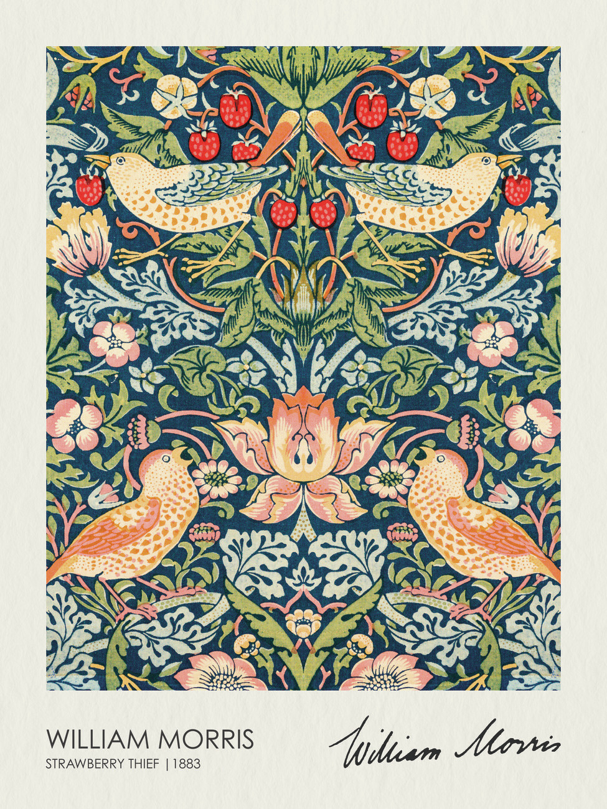
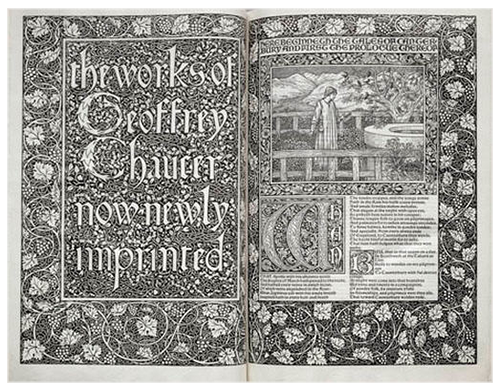

Arts and Crafts Movement (1850–1890)
The Arts and Crafts movement emerged in Britain in the mid-19th century as a response to industrialization and mass production. Rapid mechanization had transformed the production of goods, but many designers and thinkers believed that industrial manufacturing led to a decline in craftsmanship and aesthetic quality.
Influenced by social reform ideas and medieval guild traditions, the movement promoted handmade production, integrity of materials, and the unity of design and labor. Ornament was not considered superficial decoration, but rather an essential expression of structure, material, and moral value.
Key Figure: William Morris

William Morris, Strawberry Thief (Wallpaper), 1883

William Morris, Kelmscott Press Book Design, 1896
Morris believed that beauty should be accessible in everyday life. His wallpaper and textile patterns used organic forms derived from nature, featuring repeated floral motifs and rhythmic compositions. These designs demonstrate how ornament could function as a system — structured, meaningful, and deeply integrated into surface design.
This movement laid the conceptual foundation for Art Nouveau. It established the idea that decoration could carry spiritual and social meaning, an idea that would later be amplified in fin-de-siècle Europe.